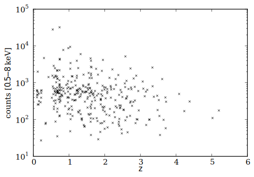
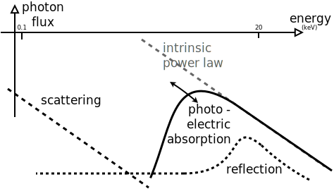
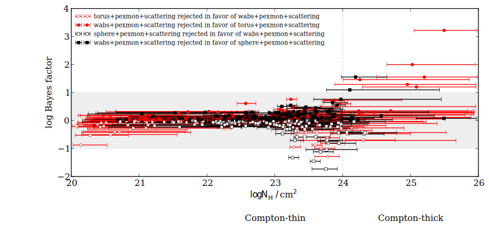
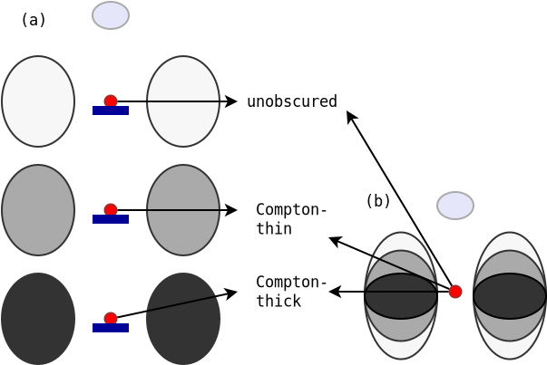

The geometry of the obscurer
in high-redshift X-ray AGN
AGN club / Oct 2013
Johannes Buchner
in collaboration with A. Georgakakis, K. Nandra, L. Hsu, C. Rangel, M. Brightman, A. Merloni and M. Salvato
Motivation
- Accretion density peaks at
- X-ray luminosity usually used as proxy for Eddington accretion rate
- LF, evolution of , AGN-Host studies, ...
- Common to do with simple models, hardness ratios
- What model is justified by the data?
Sample
- CDF-S 4Ms: 569 detections, 334 used (galaxy contamination)
- for photo-z: Coverage by Space and Ground-based telescopes (Li-Ting Hsu, in prep)
AGN X-ray spectra
Model selection on AGN X-ray spectra

Spectral analysis
photometric redshift distribution + X-ray data + model
model parameter probability distributions +
Example - Source 179 z=0.605, 2485 counts
powerlaw

Example - Source 179 z=0.605, 2485 counts
wabs

Example - Source 179 z=0.605, 2485 counts
torus+scattering

Example - Source 179 z=0.605, 2485 counts
torus+pexmon+scattering

Example - Source 179 z=0.605, 2485 counts
wabs+pexmon+scattering

Example - Source 179 z=0.605, 2485 counts
torus+pexmon+scattering

Preferred geometry
red: torus - small blob (wabs) 
Conclusions: AGN Model
-

- Obscuring torus is not a sphere, not a disk, something in between
- Thomson scattering of intrinsic radiation
- Additional compton scattering into LOS from dense region
Have now probability distributions for CDF-S, AEGIS, COSMOS
- Upcoming: relations between and ,
- Upcoming: Luminosity function